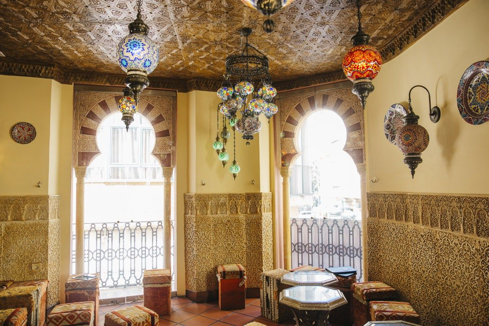
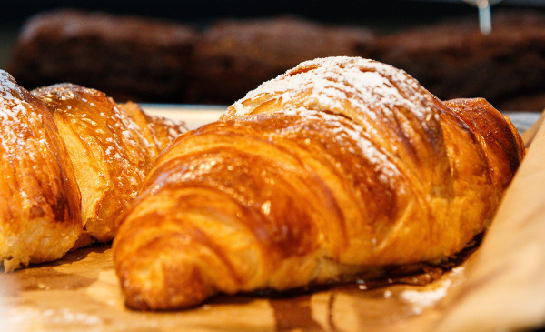
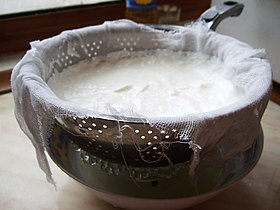
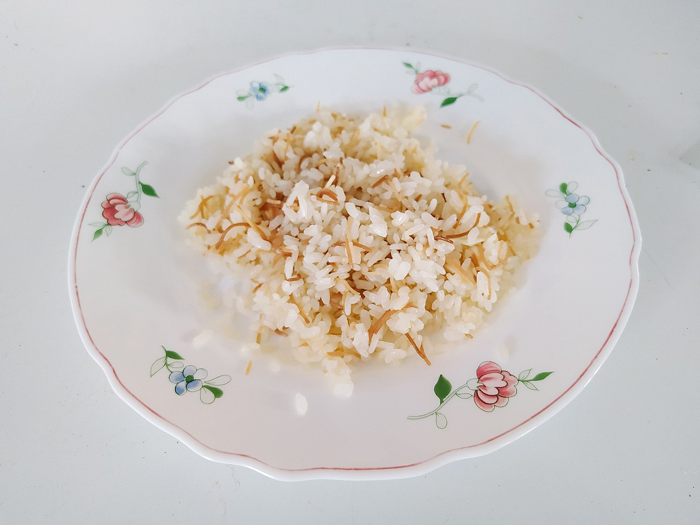
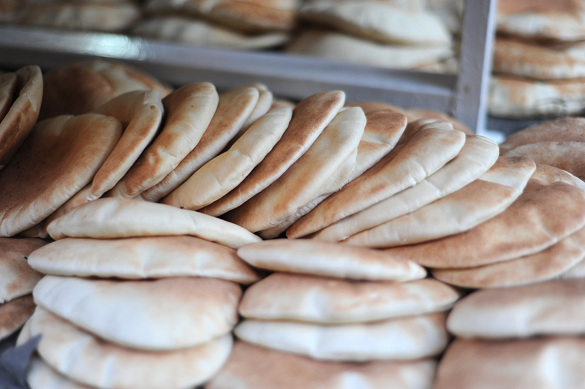
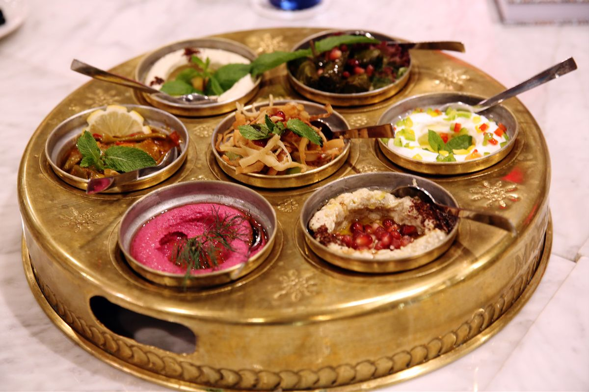

Las cafeterías suelen servir cruasanes para el desayuno. El desayuno suele ser una comida ligera, basada en pan y productos lácteos, con té y, a veces, mermelada. Los productos para el desayuno más comunes son el labneh, que es queso de yogur, y kishta, que es crema de leche de vaca.
 El almuerzo se considera la comida principal del día, es motivo de reunión para la familia, y suele darse entre las 13:30 y las 14:30 h. Rara vez las comidas tienen diferentes tiempos, ya que los platos se disponen en la mesa en forma de mezze o muqabbilat (similar a las tapas españolas) donde se sirven ensaladas y otras guarniciones acompañando a la comida principal. El plato fuerte suele constar de una ración de carne o pescado, una ración de arroz, lentejas, pan y una ración de verduras cocidas. Un tipo de preparación frecuente es la maraqa, que consiste en un guiso de verduras y carne cocinadas en salsa, generalmente a base de tomate y especias, y que se sirve con arroz árabe y pan jubz. Algunas bebidas tradicionales árabes son el laban áiran o shanina (yogur líquido), el qamar ad-din (bebida de albaricoque), el naqe'e az-zabib (bebida de pasas) o el tamr hindi (bebida de tamarindo), así como una amplia variedad de jugo de frutas. Debido a la globalización alimentaria del siglo XX, los refrescos carbonatados se han vuelto muy populares. Las bebidas no se sirven necesariamente con la comida.
 La cena es tradicionalmente la comida más liviana, aunque en los tiempos modernos, la cena ha tomado importancia en lo que respecta a entretener a los invitados debido a las horas de la jornada laboral.
